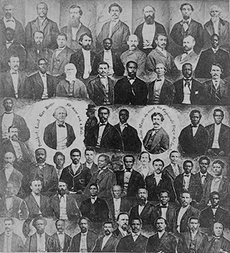
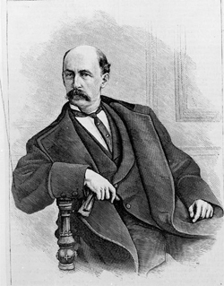

|
Badly devastated during the Civil War, South Carolina did not have any kind of
civil government until Andrew Johnson, on June 30, 1865, appointed Benjamin F.
Perry Provisional Governor in accordance with the Presidential Plan of
Reconstruction. Perry then called for an election of a convention by those
|

The first legislature elected in South
Carolina immediately after the Civil War. It included more than
50 members who were partly or wholly African American.
|
having the vote in 1860; the convention met, instituted some democratic
electoral reforms, abolished slavery, and nullified the secession ordinance. But
it refused to extend the franchise to any African Americans or to repudiate the
Confederate debt. The legislature elected under the new dispensation showed
little more political wisdom. Although it ratified the Thirteenth Amendment, it
passed a black code of great severity, which relegated the black majority to a
status little better than slavery. The election of the ex-Confederate James L.
Orr to succeed Perry ushered in a renewed period of conservatism.
When in 1867 Congress passed the Reconstruction Acts, South Carolina
underwent a complete change in government. A new constitutional convention with
a black majority not only enfranchised the freedmen and sought to protect their
economic rights but also set up a universal free public school system. The
constitution it wrote was so well framed that it was retained for many years
after the end of radical rule.
In the elections that followed the Republicans won the governorship with the
Ohio carpetbagger Robert A. Scott. They also carried both houses of the
legislature as well as the state's congressional districts. A majority of the
Assembly consisted of blacks, who, together with their scalawag and carpetbagger
allies, dominated South Carolina for the next nine years. Faced with grave
difficulties in rebuilding the state in the midst of the unrelenting hostility
of the whites, the new government attempted to set up schools; to contribute to
economic development, particularly by aiding various railroads; and to establish
welfare institutions. But the process soon became enmeshed in corruption,
especially in connection with the railroads, and by 1871 the Governor, who
despite the emergence of a Union Reform party had been reelected in 1870, was
threatened with impeachment. Although the effort failed, extensive Ku Klux Klan
activity could only be stopped by federal intervention. In 1872 the corrupt
Adjutant General, Franklin J. Moses, Jr., was nominated for Governor and
defeated a bolting faction led by Reuben Tomlinson; however, during the next two
years the orgy of spending and corruption was such that reform forces headed by
the Republican carpetbagger Daniel H. Chamberlain took over in 1874, when he
beat the independent John T. Greene.
In the meantime, the state had sent some able African Americans to Congress.
In 1871 Joseph H. Rainey, Richard H. Cain, and Robert Brown Elliott entered the
|

Daniel H. Chamberlain
|
House, followed in 1873 by Alonzo J. Ransier who had previously been lieutenant
governor (1871-1873). Some of these congressmen, particularly Elliott,
distinguished themselves by able speeches in favor of Charles Sumner's Civil
Rights Bill.
Although Governor Chamberlain sought to reform the administration, corrupt
practices continued. When the legislature elected two dubious candidates to
judgeships, Chamberlain refused to commission them, and his approaches to the
conservatives estranged him from other Republicans. The party became so
faction-ridden that it enabled the conservatives to try for a comeback. At first
some of the latter tried to cooperate with Chamberlain, but after the Hamburg
Massacre in July 1876, which the Governor denounced in no uncertain terms, and
other terrorist activities, they endorsed the candidacy of Wade Hampton, a
Confederate general who ran against Chamberlain in the ensuing election. The
outcome was in doubt; widespread fraud and intimidation resulted in the
emergence of two governments, one Democratic and one Republican, which for a few
days jointly occupied the house. The Electoral Commission in Washington awarded
the state's electoral vote to Rutherford B. Hayes, the Republican presidential
candidate, but the latter's subsequent withdrawal of federal troops caused the
fall of Chamberlain's government, so that the "Redeemers" were able to take
over. Enacting various measures to impede African-American voting, they
gradually reduced the black majority to impotence, until in 1895 a new
constitution finally signalized the end of all vestiges of Reconstruction by
giving sanction to a strict policy of racial segregation.
Source: Hans Trefousse, Historical Dictionary of Reconstruction
(Westport, CT: Greenwood Press, 1991), 206-07.
|